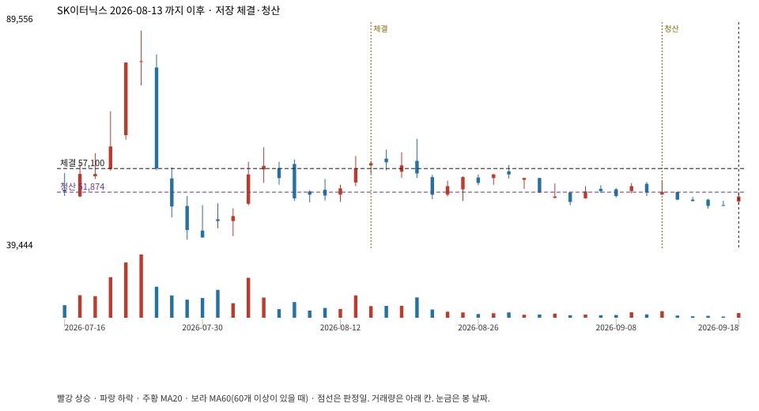

계좌를 다시 돌리지 않았다. 아래는 저장된 주문·체결·청산·비용·손익이다.

{
"case_id": "701abd672d3bc57e",
"status": "closed",
"trade": {
"symbol": "475150.KS",
"signal_date": "2026-08-13",
"quantity": 65,
"entry": 57100,
"stop": 40383,
"target": 87700,
"planned_risk": 1094252.5300524996,
"reserved_cash": 3715211.4999999995,
"fill": {
"date": "2026-08-14",
"price": 57100,
"fee": 3711.5
},
"exit": {
"date": "2026-09-11",
"price": 51874.05,
"reason": "time",
"net_pnl": -346770.06324999966,
"ambiguous_bar": false
}
},
"cost": "research fee 10bp each side, slippage 5bp; amounts below are the stored ledger, not a new run",
"chart": "c\/701abd672d3bc57e.svg"
}